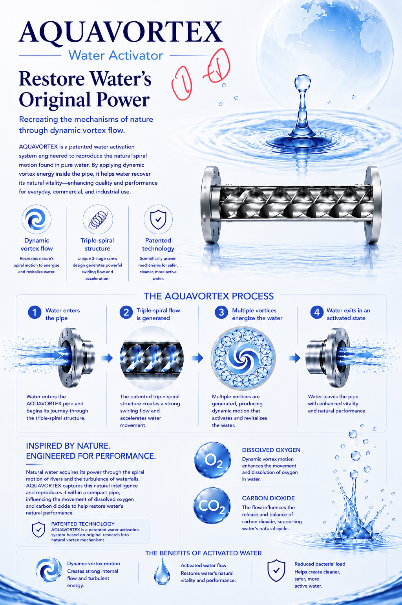
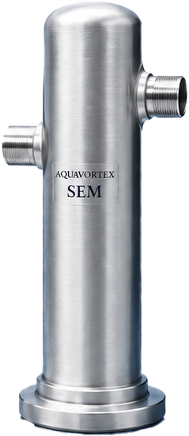
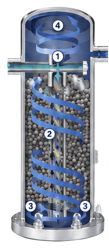
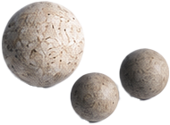

Dynamic vortex flow
Recreates nature's spiral motion to energize and revitalize water.
Recreates nature's spiral motion to energize and revitalize water.
Unique 3-stage screw design generates powerful swirling and flow acceleration.
Scientifically proven mechanisms for safer, cleaner, more active water.
How it works

Water enters the AQUAVORTEX pipe and begins its journey through the triple-spiral structure.
The patented triple-spiral structure creates a strong swirling flow and accelerates water movement.
Multiple vortices are generated, producing dynamic motion that activates and revitalizes the water.
Water leaves the pipe with enhanced vitality and natural performance.
Natural water mechanisms
Natural water acquires its power through the spiral motion of rivers and the turbulence of waterfalls. AQUAVORTEX captures this natural intelligence and reproduces it within a compact pipe, influencing the movement of dissolved oxygen and carbon dioxide to help restore water’s natural performance.
Dynamic vortex motion enhances the movement and dissolution of oxygen in water.
The flow influences the release and balance of carbon dioxide, supporting water’s natural cycle.
Creates strong internal flow and turbulent energy.
Restores water's natural vitality and performance.
Helps create cleaner, safer, more active water.
Enhanced with Special Ceramic Ball Technology
AQUAVORTEX SEM combines our patented vortex activation technology with specially developed ceramic balls inside the unit. This innovative design further enhances water’s natural vitality for everyday life.


Water is essential to life. From cooking and bathing to laundry and cleaning, it touches every part of our daily routines.
AQUAVORTEX SEM enhances this vital water by combining our vortex activation technology with specially developed ceramic balls.
The ceramic balls are non-dissolving and do not break down, so they require no replacement and are designed for semi-permanent use.
By further enhancing water’s natural power, SEM helps support a more comfortable, healthy lifestyle.

Enhances water's natural vitality through dynamic vortex flow.
Ceramic balls support a cleaner water environment.
Durable, high-quality ceramic balls that won't dissolve.
Built for long-term use with no need to replace the ceramic balls.